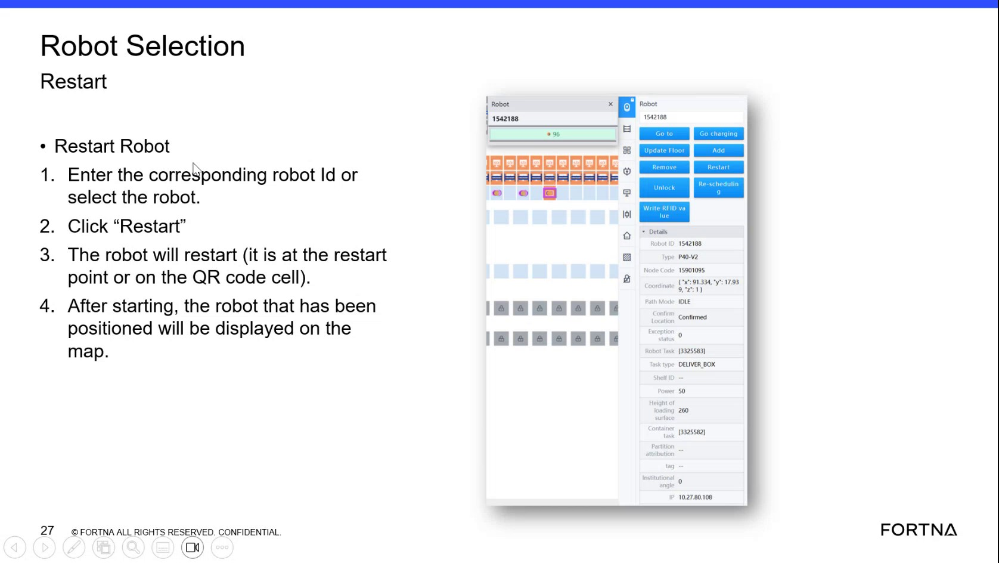

| Procedure ID | proc_restart_a_selected_robot_from_the_robot_selection_screen_v1 |
|---|---|
| Title | Restart a Selected Robot From the Robot Selection Screen |
| Procedure Type | recovery |
| Primary Role | operator |
| Support Safe | Yes |
| Validation Status | needs_sme_review |
| Merge Status | source_finalized |
Use the Robot Selection screen to restart a specific robot by entering the robot ID or selecting the robot, clicking Restart, confirming the robot is at the restart point or on the QR code cell as stated by the source, and verifying that after starting the positioned robot is displayed on the station map.
Use when a specific robot needs to be restarted from the Robot Selection screen and the operator needs to verify the robot is displayed on the station map after startup.
Responsible role: operator
Instruction:
Open or use the Robot Selection screen with the Restart Robot function.
Expected result:
The Robot Selection screen and Restart Robot area are available for use.
Screens / Images:

Stop or Escalate If:
Responsible role: operator
Instruction:
Enter the corresponding robot ID or select the robot from the screen.
Expected result:
The intended robot is selected for restart.
Screens / Images:
Stop or Escalate If:
Responsible role: operator
Instruction:
Click "Restart".
Expected result:
The restart command is issued for the selected robot.
Screens / Images:
Stop or Escalate If:
Responsible role: operator
Instruction:
Verify the robot is at the restart point or on the QR code cell as stated on the slide.
Expected result:
The robot meets the position requirement stated by the source for restart.
Screens / Images:
Stop or Escalate If:
Responsible role: operator
Instruction:
After starting, check that the positioned robot is displayed on the station map.
Expected result:
The positioned robot is displayed on the station map after starting.
Screens / Images:
Stop or Escalate If: